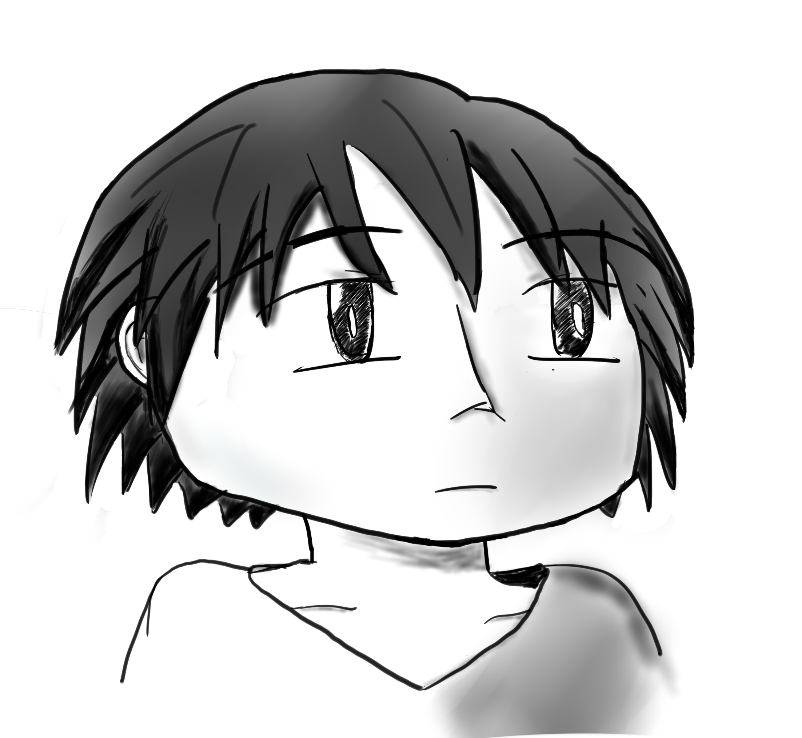
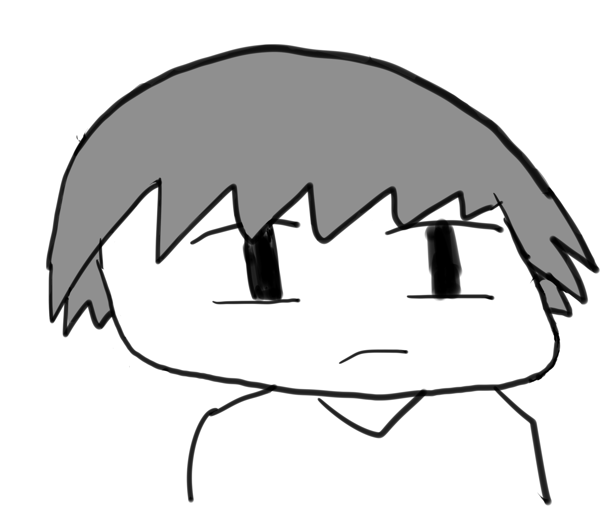

The second part of character design is about to create different style of character. The left side graph is the detailed sketch of Kenley, with shadow and 3D prespective introudced. The right side is a highly stylish and abstract character design for Kenley.

Detailed

Iconic
- Page Number: 2
- Page Size: 8.5×11 (8.5×8.5 after cutting)
- Media use: Sai
- Finished Date: Feb 5, 2015